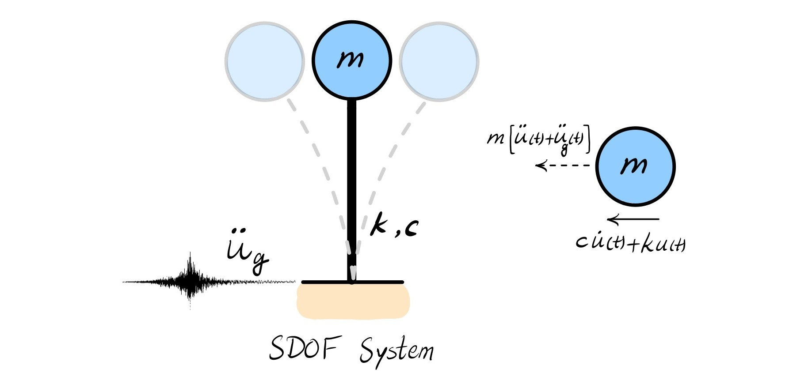

Earthquake Response Spectrum#
The earthquake response spectrum is a plot that shows the maximum response of a series of single-degree-of-freedom (SDOF) oscillators to a specific ground motion (earthquake acceleration record), as a function of the oscillator’s natural period or frequency.
The response spectrum can be plotted for:
Displacement spectrum: max. relative displacement (\(u_{max}\)) vs. oscillator’s period
Velocity spectrum: max. relative velocity (\(\dot{u}_{max}\)) vs. oscillator’s period
Acceleration spectrum: max. relative acceleration (\(\ddot{u}_{max}\)) vs. oscillator’s period
Pseudo-velocity spectrum: approxiamte max. velocity response (\(\omega_n u_{max}\)) vs. oscillator’s period
Pseudo-acceleration spectrum: aproximate max. acceleration respopnse (\(\omega_n^2u_{max}\)) vs. oscillator’s period
Before dive into calculating the reponse spectrum, let’s obtain an earthquke record. I use PEER Ground Motion Database and download an earthquake record including acceleration, velocity, and displacement time histories.
Import Earthquake Record#
The records I selected to work on here are named
RSN5970_SIERRA.MEX_BOR360.AT2,RSN5970_SIERRA.MEX_BOR360.VT2,RSN5970_SIERRA.MEX_BOR360.DT2
representing acceleration, velocity, and displacement time histories of 2010 Baja California earthquake, respectively. The earthquake had a moment magnitude of 7.2 \(M_w\) and maximum Mercalli intensity of VII. The epicenter was located in south of Guadalupe Vistoria, Baja California, Mexico (32.286°N 115.295°W) at a depth of 10 km (6.2 mile).

Let’s examine the first 10 lines of RSN5970_SIERRA.MEX_BOR360.AT2 file.
import numpy as np
import pandas as pd
import matplotlib.pyplot as plt
import seaborn as sns
from scipy.integrate import solve_ivp
from scipy.interpolate import interp1d
import os
import sys
sys.path.append(os.path.abspath("../.."))
import assets.modules.earthquake as eq
---------------------------------------------------------------------------
ModuleNotFoundError Traceback (most recent call last)
Cell In[1], line 4
2 import pandas as pd
3 import matplotlib.pyplot as plt
----> 4 import seaborn as sns
5 from scipy.integrate import solve_ivp
6 from scipy.interpolate import interp1d
ModuleNotFoundError: No module named 'seaborn'
file_path = "../../assets/data/earthquak/peer_records_raw/"
name_str = "RSN5970_SIERRA.MEX_BOR360"
file_names = {
"Acceleration": name_str + ".AT2",
"Velocity": name_str + ".VT2",
"Displacement": name_str + ".DT2"
}
file_name = os.path.join(file_path, file_names["Acceleration"])
with open(file_name, 'r') as file:
lines = file.readlines()
# Print the first 10 lines of the file
for i in range(10):
print(lines[i].strip())
print("...")
PEER NGA STRONG MOTION DATABASE RECORD
El Mayor-Cucapah, 4/4/2010, Borrego Springs, 360
ACCELERATION TIME SERIES IN UNITS OF G
NPTS= 30296, DT= .0100 SEC
-.3595791E-05 -.3602476E-05 -.3609122E-05 -.3614762E-05 -.3622277E-05
-.3629087E-05 -.3634954E-05 -.3641761E-05 -.3647513E-05 -.3656279E-05
-.3661616E-05 -.3667165E-05 -.3672715E-05 -.3675396E-05 -.3683046E-05
-.3685863E-05 -.3696702E-05 -.3703039E-05 -.3704650E-05 -.3707040E-05
-.3713379E-05 -.3714652E-05 -.3718122E-05 -.3746092E-05 -.3728889E-05
-.3744301E-05 -.3756375E-05 -.3747034E-05 -.3767861E-05 -.3751488E-05
...
The data starts from line 5, and there is one recording every 0.01 seconds as explained in the headline. Also, the acceleration data is recorded in \(g\), and there are five acceleration values per line. Performing similar examination on the files with .VT2 and .DT2 shows that the velocity and displacement values are measured in cm/s, and cm, respectively.
Using this information, I will parse the files as follows.
DT = float(lines[3].split()[-2]) # Sampling time interval in seconds
FIRST_LINE = 5 # First line to read in the file
g = 9.81 * 100 # gravitational acceleration (cm/s2)
time, ground, header = {}, {}, {}
for key, name in file_names.items():
path = os.path.join(file_path, name)
time[key], ground[key], header[key] = eq.read_values(path, DT, FIRST_LINE)
# Print the first 5 values of the time and ground values
print("First 10 values of time and ground values:\n")
print("Time (s) Acceleration (g) Velocity (cm/s) Displacement (cm)")
for i in range(10):
print(f"{time['Acceleration'][i]:8} {ground['Acceleration'][i]:16} "
f"{ground['Velocity'][i]:15} {ground['Displacement'][i]:15}")
First 10 values of time and ground values:
Time (s) Acceleration (g) Velocity (cm/s) Displacement (cm)
0.0 -3.595791e-06 0.0 0.0
0.01 -3.602476e-06 -3.52895e-05 -1.764475e-07
0.02 -3.609122e-06 -7.064436e-05 -7.061168e-07
0.03 -3.614762e-06 -0.0001060594 -1.589636e-06
0.04 -3.622277e-06 -0.000141539 -2.827628e-06
0.05 -3.629087e-06 -0.0001770888 -4.420768e-06
0.06 -3.634954e-06 -0.0002127008 -6.369716e-06
0.07 -3.641761e-06 -0.0002483749 -8.675094e-06
0.08 -3.647513e-06 -0.0002841106 -1.133752e-05
0.09 -3.656279e-06 -0.0003199174 -1.435766e-05
Let’s plot the recording for this earthquake.
# Plot the earthquake records
plt.style.use('default') # Use default style instead of seaborn
fig, ax = plt.subplots(3, 1, sharex=True, figsize=(10, 8))
for i, key in enumerate(ground.keys()):
ax[i].plot(time[key], ground[key], 'r-', label=key, linewidth=0.5)
ax[i].set_ylabel(f'{key} [{header[key][-2].split()[-1].lower()}]')
ax[i].grid(True, alpha=0.3)
ax[i].set_xlim(left=0)
ax[-1].set_xlabel('Time (s)')
title_lines = list(header.values())[0]
plt.suptitle(f"{title_lines[0]}\n{title_lines[1]}", fontsize=10)
plt.tight_layout()
plt.show()
Usually recording devices records the ground acceleration, and the velocity and displacement are computed. To perform a quick check on the downloaded data, I will compute the velocity and displacement by integrating the acceleration using the trapizoid rule. Comparing the plots shows that computed velocity and displacement time histories closely follows the downloaded records.
# Compute the velocity and displacement from acceleration
acc = ground['Acceleration'] * g # ground acceleration in cm/s^2
vel, disp = eq.integrate_acceleration(acc, DT, 1, baseline_correction=False, highpass_filter=False)
# Plot the earthquake records
plt.style.use('default') # Use default style instead of seaborn
fig, ax = plt.subplots(3, 1, sharex=True, figsize=(10, 8))
for i, key in enumerate(ground.keys()):
ax[i].plot(time[key], ground[key], 'k-', alpha=0.3, label=f"Downloaded {key}", linewidth=4)
if key == 'Velocity':
ax[i].plot(time['Acceleration'], vel, 'r-', label='Computed Velocity', linewidth=0.5, zorder=10)
elif key == 'Displacement':
ax[i].plot(time['Acceleration'], disp, 'r-', label='Computed Displacement', linewidth=0.5, zorder=10)
ax[i].set_ylabel(f'{key} [{header[key][-2].split()[-1].lower()}]')
ax[i].grid(True, alpha=0.3)
ax[i].set_xlim(left=0)
ax[i].legend(loc='upper right', fontsize=8)
ax[-1].set_xlabel('Time (s)')
title_lines = list(header.values())[0]
plt.suptitle(f"{title_lines[0]}\n{title_lines[1]}", fontsize=10)
plt.tight_layout()
plt.show()
SDOF Influenced by Ground Motion: Equation of Motion#
{kind=link}
The equation of motion for a Single Degree of Freedom (SDOF) system subjected to ground motion acceleration \(\ddot{u}_g(t)\) is:
where:
\(m\), \(k\), and \(c\) are the mass, stiffness, and damping coefficient of the system, respectively
\(u(t)\), \(\dot{u}(t)\), and \(\ddot{u}(t)\) are the relative displacement,velocity, and acceleration of the mass with respect to the ground, respectively
\(\ddot{u}_g(t)\) is the ground acceleration
The equation of motion can be re-arranged as follows:
Dynamic Properties#
The system is characterized by its:
Natural frequency: \(\omega_n = \sqrt{\frac{k}{m}}\)
Natural period: \(T_n = \frac{2\pi}{\omega_n}\)
Damping ratio: \(\zeta = \frac{c}{2m\omega_n}\)
Solution Methods#
The solution can be obtained through several methods:
1. Time Domain Solution (Duhamel’s Integral)#
For zero initial conditions, the relative displacement response is given by:
where \(\omega_d = \omega_n\sqrt{1-\zeta^2}\) is the damped natural frequency and \(F(\tau)\) is the external force. Assuming that the external force is \(F(\tau)=-m\ddot{u}_g(\tau)\), the above equation is transformed to
Simplifying this equation will lead to
Note
The Duhamel Integral is obtained by superposition of the responses of individual palses. So it can only be utilized to solve the equation of motion of linear systems.
2. Numerical Time Integration#
Common numerical methods include:
Newmark-β method
Central Difference method
Wilson-θ method
3. Frequency Domain Solution#
The frequency response function (FRF) relates the input ground motion to the output displacement:
Response Spectra#
The response spectrum presents the maximum response of SDOF systems with different natural periods to a specific ground motion:
Displacement Response Spectrum (\(S_d = \tfrac{1}{\omega_n}S_{pv}\))
Pseudo-Velocity Response Spectrum (\(S_{pv}\))
Pseudo-Acceleration Response Spectrum (\(Sp_a = \omega_n S_{pv}\))
These spectra are essential tools in earthquake engineering for:
Structural design
Seismic analysis
Performance assessment
Important Considerations#
The solution assumes linear elastic behavior
Ground motion is typically provided as an acceleration time history
Damping is usually assumed to be viscous (velocity-proportional)
The response depends on the system properties (\(T_n\), \(\zeta\)) and the characteristics of the ground motion
The analysis of SDOF systems under ground motion provides fundamental insights into structural dynamics and serves as a building block for understanding more complex multi-degree-of-freedom systems.
Example: SDOF Response to Ground Motion#
Let’s simulate the response of an SDOF system to a simple ground motion.
# System parameters
t_n = 2 # natural period (sec)
omega_n = 2 * np.pi / t_n # natural frequency (rad/s)
zeta = 0.05 # damping ratio (5%)
# Time parameters
t = time['Acceleration']
# Create interpolation function for ground motion
acc_interp = interp1d(t, ground['Acceleration'], bounds_error=False, fill_value=0.0)
def sdof_system(t, y):
# Get ground acceleration at time t using interpolation function
acc_t = acc_interp(t)
# y[0] is displacement, y[1] is velocity
dydt = np.zeros_like(y)
dydt[0] = y[1]
dydt[1] = -omega_n**2 * y[0] - 2*zeta*omega_n*y[1] - acc_t * g
return dydt
# Initial conditions
y0 = np.array([0.0, 0.0])
# Solve the system
sol = solve_ivp(
sdof_system,
t_span=[0, t[-1]],
y0=y0,
t_eval=t,
method='RK45',
rtol=1e-8,
atol=1e-8
)
# Calculate structural response including acceleration
structure = {
'Acceleration': -omega_n**2 * sol.y[0] - 2*zeta*omega_n*sol.y[1] - ground['Acceleration'] * g,
'Velocity': sol.y[1],
'Displacement': sol.y[0]
}
# Plot results
plt.style.use('default') # Use default style instead of seaborn
fig, ax = plt.subplots(3, 1, sharex=True,figsize=(10, 8))
for i, key in enumerate(ground.keys()):
ax[i].plot(t, ground[key], 'k-', label='Ground', alpha = 0.5, linewidth=0.5)
if key == 'Acceleration':
ax[i].plot(t, structure[key] / g, 'r-', label='Structure', linewidth=0.5)
else:
ax[i].plot(t, structure[key], 'r-', label='Structure', linewidth=0.5)
ax[i].set_xlim(left=0)
ax[i].set_ylabel(f'{key} ({header[key][-2].split()[-1].lower()})')
ax[i].grid(True, alpha=0.3)
ax[i].legend()
ax[-1].set_xlabel('Time (s)')
plt.suptitle(f"Linear Dynamic Response of {100*zeta}%-Damped SDOF with Tn={t_n} sec\nUnder [{title_lines[1]}] Ground Excitation", fontsize=10)
plt.tight_layout()
plt.show()
# System parameters
t_n_values = np.arange(0.05, 4.05, 0.05) # natural periods from 0.1 to 10 sec
omega_n = 2 * np.pi / t_n_values # natural frequencies (rad/s)
zeta = 0.05 # damping ratio (5%)
g = 9.81 * 100 # gravitational acceleration (cm/s2)
# Time parameters
t = time['Acceleration']
# Create interpolation function for ground motion
acc_interp = interp1d(t, ground['Acceleration'] * g, bounds_error=False, fill_value=0.0)
# Pre-calculate ground acceleration for all time points
acc_t = acc_interp(t)
# Vectorized system equations
def sdof_system_vectorized(t_val, y, omega_n_array):
# y shape is (2*n_periods, ) where first n_periods elements are displacements
# and second n_periods elements are velocities
n_periods = len(omega_n_array)
# Reshape y into displacement and velocity arrays
displacement = y[:n_periods]
velocity = y[n_periods:]
# Calculate derivatives
d_displacement = velocity
d_velocity = np.zeros_like(displacement)
# Get current acceleration value using interpolation
current_acc = acc_interp(t_val) if t_val < t[-1] else 0
# Calculate d_velocity for each period
for i in range(n_periods):
d_velocity[i] = -omega_n_array[i]**2 * displacement[i] - \
2 * zeta * omega_n_array[i] * velocity[i] - \
current_acc
return np.concatenate([d_displacement, d_velocity])
# Calculate natural frequencies
omega_n_array = 2 * np.pi / t_n_values
# Set up initial conditions for all periods at once
n_periods = len(t_n_values)
y0 = np.zeros(2 * n_periods) # First n_periods zeros for displacement, second for velocity
# Solve the system for all periods at once
sol = solve_ivp(
lambda t, y: sdof_system_vectorized(t, y, omega_n_array),
t_span=[0, t[-1]],
y0=y0,
t_eval=t,
method='RK45',
rtol=1e-8,
atol=1e-8
)
# Extract and organize results
n_time = len(t)
displacement = np.zeros((n_periods, n_time))
velocity = np.zeros((n_periods, n_time))
acceleration = np.zeros((n_periods, n_time))
for i in range(n_periods):
displacement[i] = sol.y[i]
velocity[i] = sol.y[i + n_periods]
acceleration[i] = -omega_n_array[i]**2 * displacement[i] - \
2 * zeta * omega_n_array[i] * velocity[i] - \
ground['Acceleration'] * g
structure = {
'Displacement': displacement,
'Velocity': velocity,
'Acceleration': acceleration
}
s_d = np.max(np.abs(structure['Displacement']), axis=1)
fig, ax = plt.subplots(3, 1, sharex=True, figsize=(10, 8))
for i, key in enumerate(structure.keys()):
peak = np.max(np.abs(structure[key]), axis=1)
if key == 'Acceleration':
peak = peak / g
s = s_d * np.power(omega_n, 2) / g
elif key == 'Displacement':
s = s_d * omega_n
else: # Displacement
s = s_d
ax[i].plot(t_n_values, peak, 'r-', linewidth=1, label=f'Spectral {key}')
if key in ['Acceleration', 'Velocity']:
ax[i].plot(t_n_values, s, 'k-', alpha=0.5, linewidth=1, label=f'Pseudo-Spectral {key}')
ax[i].set_xlim(left=0)
ax[i].grid(True, alpha=0.3)
ax[i].set_ylabel(f'Peak {key} ({header[key][-2].split()[-1].lower()})')
ax[i].legend()
ax[-1].set_xlabel('Undamped Natural Period, $T_n$ (s)')
plt.suptitle(f"Response Spectrum of {100*zeta}%-Damped Linear SDOF\nUnder [{title_lines[1]}] Ground Excitation", fontsize=10)
plt.tight_layout()
plt.show()